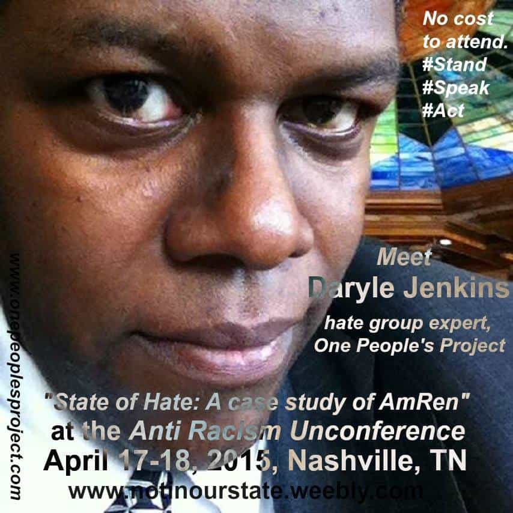
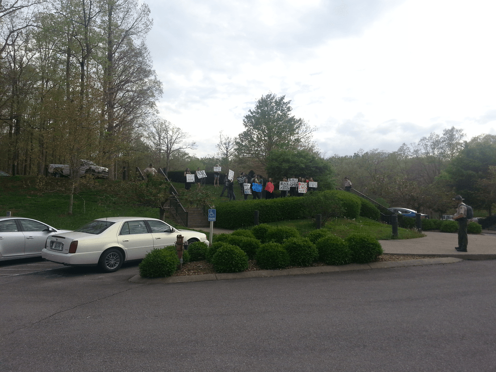
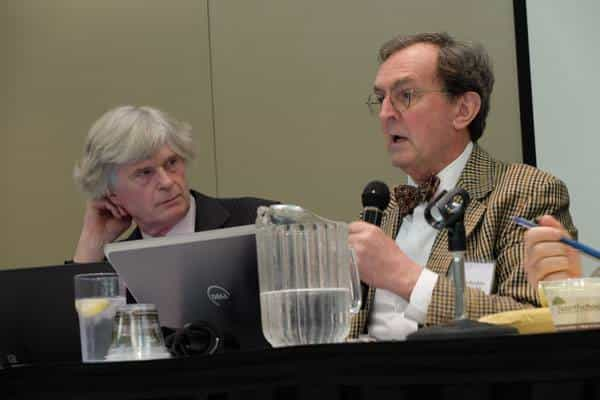

< < < Back
3 Things I Learned At This Year’s American Renaissance Conference – Return Of Kings
As my friend Blair Naso reported on Tuesday, we attended this year’s American Renaissance conference, held last weekend at Montgomery Bell State Park near Nashville. I wanted to go because I’ve never been to one and figured it would be a hell of an adventure; the fact that I’m close friends with William Rome, a long-time AmRen attendee and insider, was also a factor.
While Blair gave a fair and balanced account of what went on that weekend, I’ve decided to offer my own take on AmRen and what I learned from it.
1. White nationalists are no different than other folks in this part of the Internet
It’s easy to fall into the trap of judging an ideological clique based on their worst elements. I know I have a sketchy reputation among the more traditional elements of the alt-right based on my love of Filipino girls and derisive comments I’ve written about white nationalism in the past. In fact, I deliberately kept the fact that I was going to AmRen under wraps because I was unsure of the reaction I would get. The fact that Taylor himself has criticized ROK and publisher Roosh didn’t help either.
As it turns out, judging white nationalists based on the retards commenting on their blogs is like judging Return of Kings based on the human spambot commenters who can’t go three syllables without blurting out “hypergamy” or “DON’T GET MARRIED!” like an autistic kindergartner on Red Bull.
Not only was everyone at AmRen civil and polite to me, I met quite a few folks who were fans of my writing. One of the biggest surprises was meeting Henry Wolff, Jared Taylor’s assistant, and him telling me that he’d met Roosh at his DC meetup three years ago. In fact, the only people I disliked were a pair of geldings who were polite to my face—one of whom straight-up told me he had put the feud I’d had with them years ago in the past—but trashed me on their blog as soon as they got home.
As Rome pointed out to me over the weekend, the very structure of the conference deters Internet cranks. Beyond the cost-prohibitive registration and hotel reservation ($100 to register, $35 for the banquet, and $176 for the hotel room), the remote location—about 45 minutes from Nashville in the middle of nowhere—also throws a wrench in the works. The logistics of getting a room, getting a plane ride and/or car on top of the conference itself are too much for the average basement dweller to handle.
The reality is that aside from the differences in politics, white nationalists really aren’t that different than the guys in the manosphere. At the end of the day, we all like to get drunk, party our asses off and don’t take ourselves too seriously. For example, one of the highlights of the weekend was watching Scott Terry and Matt Parrott do a karaoke rendition of Depeche Mode’s anti-racist anthem “People Are People” at a honky-tonk bar.
2. There’s more diversity at an AmRen conference than among its leftist opponents

Despite being a white nationalist event, AmRen drew several minority attendees, including a cute black girl and a pair of Puerto Rican nationalists. They were welcomed in and treated no differently than the others. Conversely, the sad anti-racist demonstration on Saturday night was almost all white, save for Daryle Jenkins, the pudgy black race-baiter who organized both the protest and an “Anti-Racism Unconference” earlier in the day.

Not only were the anti-racist protesters more deficient in melanin than the attendees, they were visibly demoralized. While I didn’t attend last year’s AmRen, William Rome produced a mini-documentary about it (currently not online), part of which featured a fired-up gang of freaks admonishing the “Nazis” to “remember Stalingrad” and other inflammatory slogans.
This year, the best they could manage was “No Hate in Our State” and “Racists Are Buttheads,” and a couple of the protesters were so lazy they actually laid down in the grass while holding up their signs.
Between the flaccid protest and the record attendance at AmRen (according to Parrott and Taylor, the conference is on the verge of outgrowing the venue), it’s clear that the culture is swinging towards the alt-right and manosphere’s direction. I mean, “Racists Are Buttheads?” What are you, twelve?
3. The speakers are the least important part of the conference

While AmRen attracts attendees by billing its lineup of speakers, the reality is that the speakers are only really there in order to provide an excuse for people to mingle. The only speakers I saw were Peter Brimelow, RAMZPAUL, and part of Richard Spencer’s speech. I also watched “The Great Debate,” in which Brimelow and John Derbyshire bantered with Spencer and Sam Dickson on the usefulness of the U.S. government in preserving white America.
The real reason to go to AmRen—or any conference period—is to shake hands and make friends. The antics you can get up to in one weekend in the woods are incredible. For example, I blew off one of the speakers to smoke Cuban cigars outside with William Rome and Scott Terry. I also spent a couple of nights hanging with Blair, Rome, Parrott, Matthew Heimbach and others at a honky-tonk bar, which produced its own memorable moments (which Blair and I have already discussed).
Overall, while there some things I’d rather not have done (or had happen) over the weekend (some of which I’ll talk about later), I had a blast at AmRen. In fact, I was so wasted from partying when the conference ended on Sunday that not only did I have the mother of all hangovers, I had a mysterious four-inch gash on the top of my head. The coup de grace was when I threw up in the toilet at a German restaurant where Rome and I were having lunch.
Verdict: AmRen is a ten out of ten, would vomit again.
Read More: I Attended The 2015 White Nationalist AmRen Conference


{kind=link}